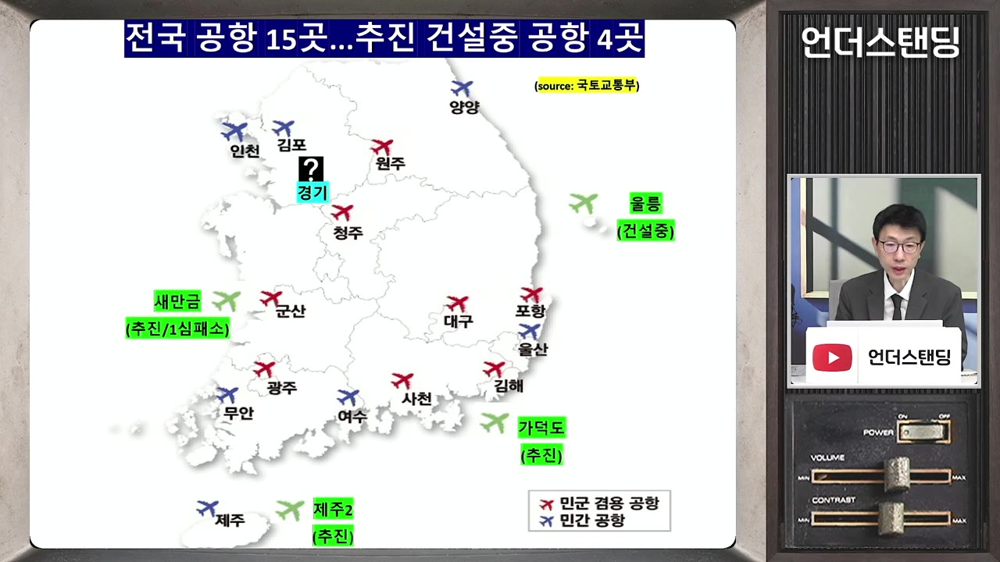
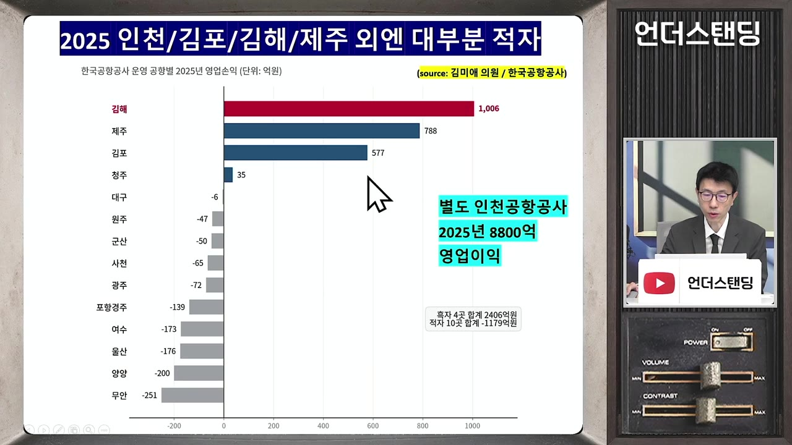
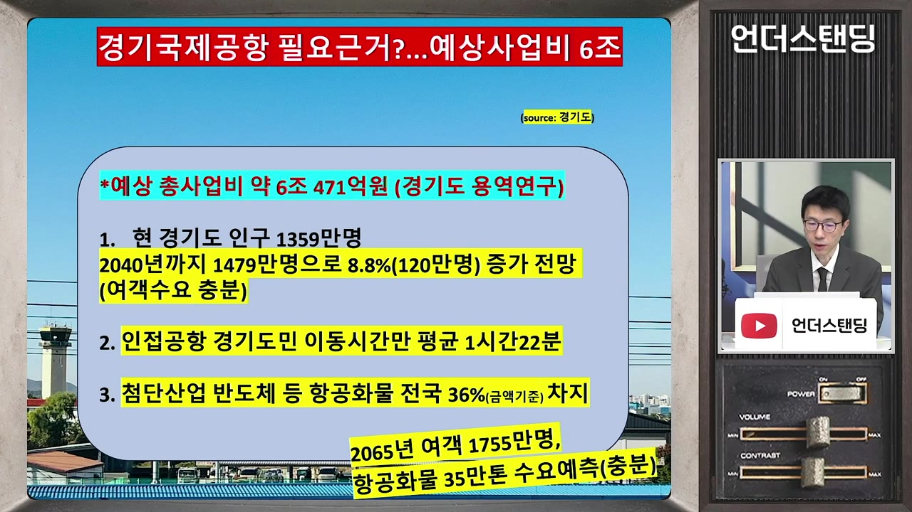
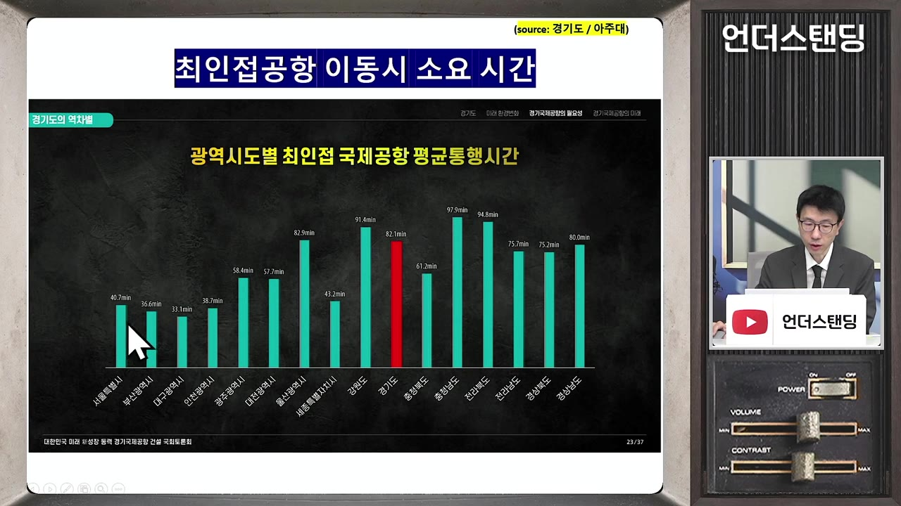
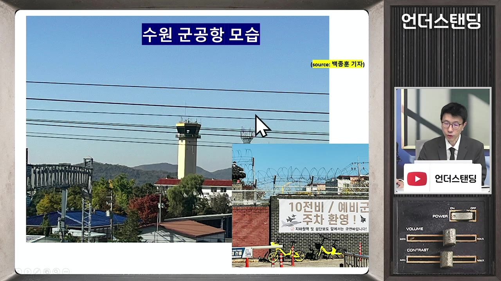
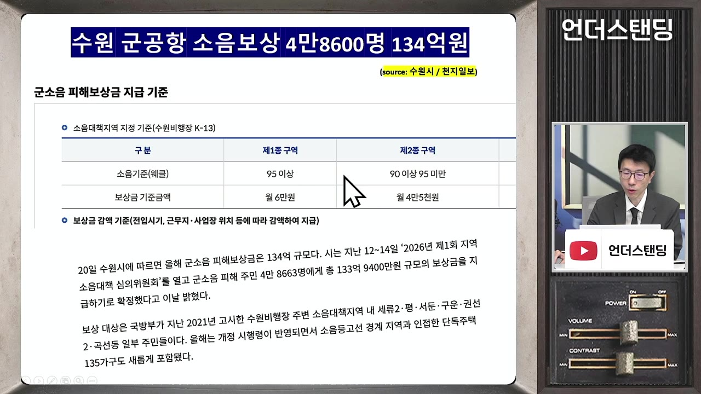
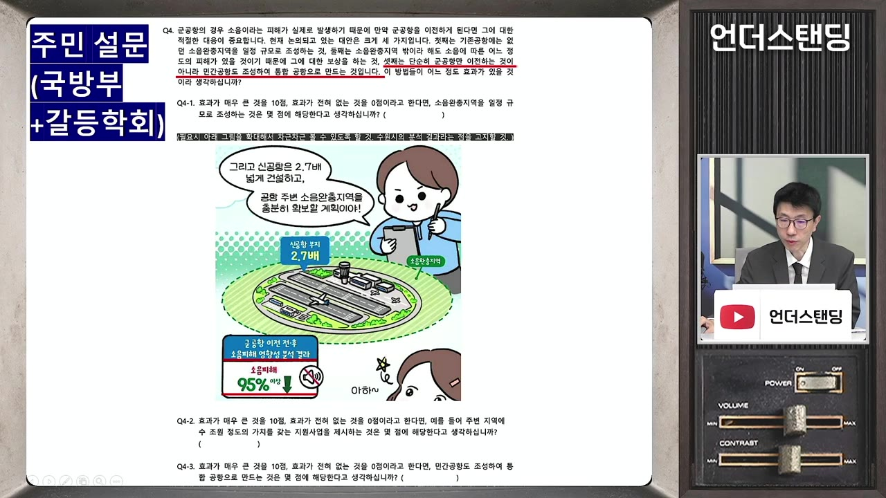
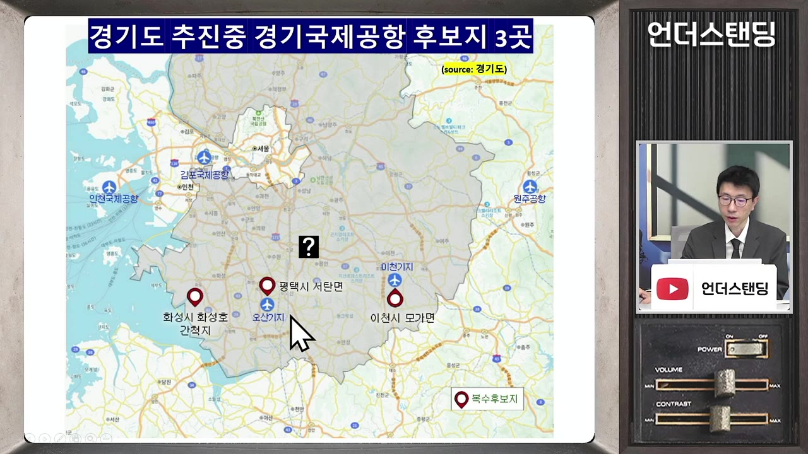
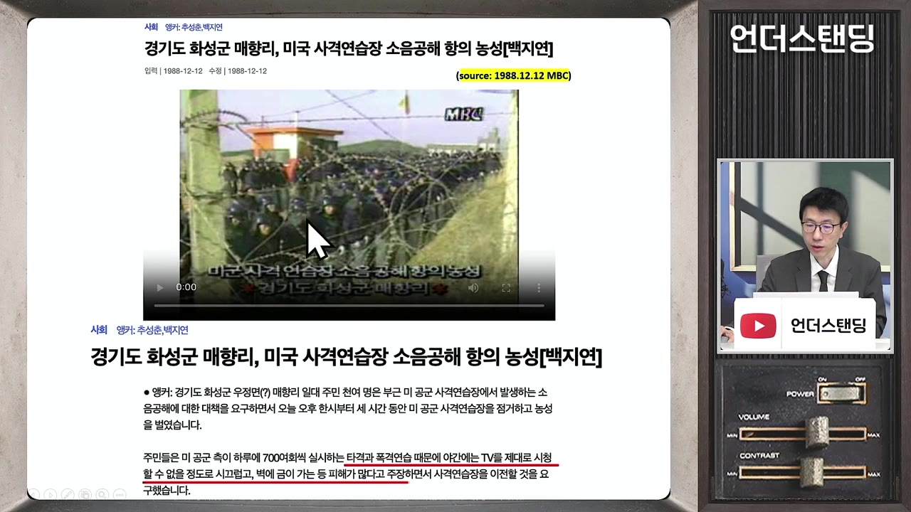

재정파탄이라던 경기도 추미애 지사가 6조 공항 카드 꺼내 든 이유 (언더스탠딩 백종훈 기자)
▶ 원본 영상 보기한눈에 보기
- 추미애 경기도지사가 국정감사에서 "국비로 경기국제공항을 추진하겠다"고 밝혔고, 11월 발표될 국토교통부 '제7차 공항개발 종합계획'에 들어가느냐가 첫 관문이다.
- 경기도 자체 추산 총사업비는 약 6조 471억 원이며, 인구 증가·반도체 항공화물·공항 접근성(평균 1시간 22분)을 근거로 든다.
- 반대 측은 인천공항 5단계 확장(연 1억 3천만 명), 지방공항 대부분 적자, "수요를 나눠 갖는 것일 뿐"이라는 점을 지적한다.
- 진짜 쟁점은 수원 군공항의 화성 이전과의 연계로, 화성시는 국제공항이 군공항을 받게 하려는 '당근 카드'라며 결사 반대한다.
- 공항이 전액 국비라서 지자체에겐 '로또'가 되는 구조 자체를 바꿔야 한다는 문제 제기도 나왔다.
이런 분께 도움이 됩니다
- 경기국제공항·수원 군공항 이전 뉴스의 배경과 이해관계를 한 번에 정리하고 싶은 분.
- 화성·평택·이천·수원 지역 개발 이슈에 관심 있는 분.
핵심 내용
추미애 지사의 주장과 첫 관문
- 추 지사는 국감에서 "인구가 늘고 반도체 등 첨단 산업 클러스터가 있는 경기도에 국제공항이 없는 건 맞지 않다"며 국비 추진을 밝혔다. (1:03)
- 인천은 경기도가 아니고 멀며, 김포는 서울이라 경기도엔 국제공항이 없다는 논리.
- 후보지(영상 설명란 기준): 화성시 화옹지구 · 평택시 서탄면 · 이천시 모가면.
- '국비'를 강조한 이유: 공항은 원래 전액 국비가 원칙인데, 추 지사가 앞서 경기도 '재정 파탄'을 선언한 만큼 도 재정엔 영향이 없다는 점을 내세우려는 것. (1:53)
- 전임 김동연 지사(자막 표기 '김동현') 때도 추진했지만 타당성 조사까지 가지 못했다 — 임기 말이라 종합계획에 제대로 올려 보지도 못한 것. (13:44)
- 제6차 계획에는 경기 공항이 '추후 검토' 수준의 참고 사항으로만 들어갔다.
💡 경기도지사가 아무리 원해도 국토부 7차 종합계획에 정식으로 들어가야 모든 절차가 시작된다.
🔁 신규 공항이 지어지기까지
- 계획안 제출
- 종합계획 반영
- 경제성 조사
- 환경 평가
- 협의·부지 매입
- 1계획안 제출
지자체가 원하는 공항 계획을 만들어 국토부에 올린다.
- 2종합계획 반영
국토부가 판단해 공항개발 종합계획에 넣는다. 경기공항은 11월 7차 계획이 관문.
- 3경제성 조사
예비타당성 조사 등, 짧아도 1~2년.
- 4환경 평가
전략환경영향평가 약 1년.
- 5협의·부지 매입
주민 협의와 부지 매입을 거쳐 착공.
전국 공항 현황: 이미 15곳, 대부분 적자
- 전국 공항은 15곳으로, 민간공항과 민군 겸용 공항(청주·김해·광주 등)으로 나뉜다. (3:53)
- 경기공항은 인천·김포와 청주 사이, 사실상 경기 남부를 염두에 둔 것.

- 건설·추진 중인 공항:
| 공항 | 상태 | 예정 |
|---|---|---|
| 울릉공항 | 공정 80% 이상 | 2028년 |
| 부산 가덕도신공항 | 연내 첫 삽 가능성, 공사비 증액 논의 | 2035년 |
| 제주 제2공항 | 전략환경영향평가 통과, 도의회 동의 남음 | 2034~35년 |
| 새만금 국제공항 | 행정법원 1심에서 기본계획 취소, 불확실 | — |
- 작년 기준 흑자는 인천(8천억 원 이상, 자막상 불분명)·김해·제주·김포 4곳 + 오랜만에 흑자를 낸 청주뿐이다. (5:52)
- 무안·양양공항은 연 200억 원 이상 적자, 5년 누적 적자가 1천억 원대(자막상 '1억 900억'으로 불분명).
- 김해는 용량이 부족할 정도.

💡 남쪽엔 더 지을 여지가 없지만, 김해·김포·청주처럼 수요가 있는 축이라면 검토는 해볼 만하다는 게 진행자들의 평가.
찬성 논리: 경기도가 내세우는 근거
- 예상 총사업비 6조 471억 원(경기도 자체 용역). 국토부가 다시 산정하면 달라질 수 있고, 보통은 물가·공사비로 불어난다. (8:32)

- 경기도가 드는 근거:

- 용역 보고서는 개요만 공개됐고 전문은 공개되지 않았다.
반대 논리: 수요·돈·효과에 대한 의문
- 반대는 주로 시민·환경단체와 화성시 주민. 공항은 인접 주민 외엔 대부분 찬성하는 시설이라 반대가 많지는 않다. (11:25)
- 인천공항으로 충분: 5단계 확장으로 연 1억 3천만 명 수용, 활주로 4개, 흑자 운영 중. (11:52)
- 화물도 육로로 충분: 반도체는 수출의 약 36%지만 가볍고 부피가 작아 트럭으로 인천공항까지 보내면 된다.
- 재반론: 이천은 청주가 가깝지만, 청주는 민군 겸용이라 국제선이 적어 화물 증가를 감당 못 한다.
- 수요 나눠 먹기: 인천이 벌 돈을 경기 남부가 버는 것뿐이면 6조를 들여 새 부가가치가 생기느냐는 의문 — 청주공항만 더 어려워질 수 있다. (15:35)
- "경기 남부에 공항이 생겼다고 해외여행을 두세 번 가진 않는다."
- 대안: 차라리 경기 남부에서 인천공항으로 가는 GTX 등 직결 교통을 만드는 게 낫다는 의견.
| 사업 | 비용 |
|---|---|
| 경기국제공항 | 약 6조 원 |
| 제주 제2공항 | 약 5조 5천억 원 |
| 가덕도신공항 | 13조 원 |
| GTX 노선 하나 | 2~3조 원 |
진짜 쟁점: 수원 군공항 이전과의 연계
- 수원 군공항(공군 제10전투비행단)은 1호선 세류역 인근, 수원역에서 버스로 5분 거리 도심에 있다. (17:36)
- 소음이 '벼락 치는 소리' 수준 — 기자가 3시간 머무는 동안 오전엔 시간당 1~2대, 12시 이후엔 10분에 한 번꼴로 떴다.

- 연간 약 4만 8천 명에게 130억 원의 소음 보상금이 나간다(최근접 월 약 6만 원, 조금 떨어지면 월 4만 5천 원). (19:42)

- 2017년 국방부가 화성시 화옹지구(간척지)를 예비 이전 후보지로 지정했지만, 화성시·주민 반대로 10년 가까이 대립 중이다. (20:47)
- 구도: 국방부·경기도·수원시(이전 찬성) vs 화성시(반대).
- 수원시가 이전을 원하는 이유: 190만 평 부지가 수원역 바로 옆 '금싸라기 땅'이 돼 수원시 추산 땅값만 20조 원.
- 개발 이익으로 이전 공항 건설비를 대고도 남아, 화성시에 3조 원 이상 지원하겠다고 제안.
💡 수원은 20조 원짜리 땅을 얻고, 화성은 소음을 떠안는 구조 — 그래서 '3조 지원'으로도 설득이 안 된다.
화성시가 '꼼수'라고 의심하는 이유
- 국방부의 화성시민 설문지(기자 입수)에 "군공항만이 아니라 민간공항도 조성해 통합공항으로 만드는 것도 생각할 수 있다"는 문항이 들어 있다. (23:26)
- 화성시는 "설문을 가장한 여론 작업"이라며 반발.
- 완충지역을 넓게 두겠다는 내용을 카툰으로 넣는 등 방향성이 있다는 주장.

- 화성시 입장: 국제공항을 받으면 군공항도 무조건 따라온다 — 경기국제공항은 군공항을 받게 하려는 '당근 카드'. (26:48)
- 경기도·국방부 입장: 경기국제공항은 추 지사 공약, 군공항 이전은 국방부가 9년 전 합법적 용역으로 정한 것 — 둘은 별개. (27:17)
- 다른 후보지인 평택(오산기지, 실제 소재지는 평택)과 이천(육군 항공사령부)엔 이미 군 비행장이 있다.
- 화성이 민간공항만 받으면 군공항 이전지가 마땅치 않고, 다른 지역도 군공항만 오면 거부할 것 — 그래서 둘이 본질적으로 엮일 수밖에 없다.

매향리의 기억: 화성시가 '공항'에 질색하는 배경
🔁 매향리 사격장과 화성의 트라우마
- 사격장 시작
- 주민 항의
- 사격장 폐쇄
- 군공항 후보지
- 현재 대립
- 1사격장 시작
1951년부터 화성시 우정읍 매향리에 미군 폭격기 사격장 운영. (25:21)
- 2주민 항의
1988년 MBC 뉴스에 소음 항의 농성 보도, "밤에 TV를 볼 수 없다", 벽 균열·오폭 피해 주장.

1988.12.12 MBC '매향리, 미국 사격연습장 소음공해 항의 농성' 보도 · ▶ 26:04 - 3사격장 폐쇄
2005년, 54년 만에 중단. 주민들이 환호.
- 4군공항 후보지
2017년 인근 화옹지구가 수원 군공항 예비 이전 후보지로 지정.
- 5현재 대립
"겨우 폐지했는데 또 공항이냐"며 결사 반대.
공항은 왜 전액 국비인가
- 전액 국비라 지자체 입장에선 "받기만 하면 대박"이고, 무조건 해 달라고 로비하는 구조가 된다는 지적. (31:45)
- 지자체 몫은 접근 도로 정도로 전체 사업비의 10%도 안 된다. (32:48)
- 제안: 철도처럼 수혜를 보는 지자체가 비례해 분담하게 하면 더 합리적인 결정이 나올 것.
💡 공항이 필요하면 지어야 하지만, 지자체에게 '로또'가 되지 않는 시스템이 필요하다.
기억할 숫자·인용
- 6조 471억 원: 경기국제공항 총사업비(경기도 자체 추산)
- 1,359만 → 1,479만 명: 경기도 인구(현재 → 2040년 전망)
- 1시간 22분: 경기도민의 최인접 공항 평균 이동시간(아주대 용역)
- B/C 약 2: 경기도가 주장하는 비용 대비 편익(보고서 비공개)
- 연 1억 3천만 명: 인천공항 5단계 확장 후 수용 능력
- 15곳: 전국 공항 수, 흑자는 인천·김해·제주·김포(+청주)뿐
- 20조 원 / 190만 평: 수원 군공항 부지 땅값(수원시 추산)
- 3조 원 이상: 수원시가 제안한 화성시 지원 규모
- 4만 8천 명·130억 원: 수원 군공항 연간 소음 보상 대상·금액
- 1951~2005년: 매향리 미군 사격장 운영 기간
- "공항이 무슨 마치 로또처럼 되는 거는 조금 문제가 있다."
생각해볼 점
- (영상 내용) B/C 2는 경기도 자체 용역이고 전문이 비공개다 — 국토부 재산정과 예비타당성 결과가 나와야 판단할 수 있다. 사업비도 보통 불어난다는 점을 감안해야 한다.
- (영상 내용) 핵심은 '총수요가 늘어나느냐'다. 인천·청주 수요를 옮겨오는 것뿐이라면 국가 전체로는 이득이 작다. (내 의견) 반대로 인천 접근성 문제로 포기하던 수요나 반도체 긴급 화물 수요가 실제로 얼마나 되는지는 별도 데이터로 확인할 부분이다.
- (내 의견) 국제공항과 군공항은 공식적으로 별개라지만, 후보지마다 군 비행장이 얽혀 있어 두 사안을 함께 놓고 봐야 결과를 예측할 수 있다. 진행자 예상처럼 7차 계획 반영 여부(정식 반영인지, 6차처럼 참고 사항인지)가 첫 신호다.
바로 해볼 일
- 11월 국토부 '제7차 공항개발 종합계획' 발표 때 경기국제공항이 정식 반영인지, '추후 검토'인지 확인하기
- 화성·평택·이천 후보지와 수원 군공항 위치를 지도에서 직접 찾아 거리·주변 환경 비교해 보기
- 사는 지역에서 인천·김포·청주공항까지 실제 이동시간을 재 보고 '1시간 22분' 주장과 비교해 보기